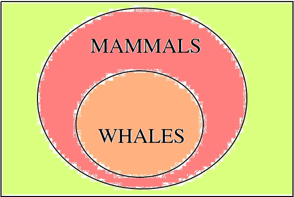

Knowledge#
I know that I know nothing
—Socrates
How do we know things? To put a finer point on it, how do we know that we know things? What exactly does knowing a thing entail, anyway? The goal of this course is to provide, if not an exact answer, then at least a probable answer to this question. Make no mistake, the question is not easily answered, even in a probable way. In trying to uncover the answer, you will be required to think about concepts you have likely never encountered prior to this class.
Before we begin to untangle the answer, let us take a step back and see what put us in this pickle in the first place.
History#
Plato#
One of the first historical attempts of which we are aware to give a proto-scientific account of knowledge was produced by Plato in the 4 th century BCE. In his work Thaetetus, he tackles the subject of how we know things. The work is written as a dialogue between the titular character, a young mathematician named Thaetetus, and Plato’s teacher, Socrates.
Read through an excerpt of Thaetetus below,
The contents of Plato’s Theatetus have greatly influenced the development of scientific thought in the subsequent centuries, so it is worth understanding why Plato thought what Socrates was saying was so important it should be written down for future generations.
Socrates is making the point in the preceding lines that knowledge is not exactly the same as something you have, but has more in common with something you possess. And like a bird in a cage to which Socrates draws an analogy, you only possess it insofar that you assume control over it. The bird, however, does not belong to its possessor; if you were to open its cage, it would fly away and you would be none the wiser.
In other words, in order to know a thing, you must first make assumptions. You only know something insofar that you have assumed something.
Aristotle#
Like Socrates influenced Plato, Plato influenced Aristotle, and it would be Aristotle who would make the biggest mark on the history of thought. Of the three major Greek philosopher, Socrates, Plato and Aristotle, Aristotle was by far the most prolific. He wrote volumes of book on subjects as diverse as logic, biology, physics and art. His works were used as textbooks for centuries afterwards; more than that, entire school curriculums were oriented around learning what Aristotle saw as the three tiers (or trivium) of primary education: grammar, logic and rhetoric. Many of his volumes are still studied to this day in universities across the world.
After learning from Plato, Aristotle moved to Athens, Greece and opened a famous academy named the Lyceum. It was there he wrote and distributed his extensive body of work. We will take a look at some of his contributions in the field of Logic, specifically those relating to the character of knowledge,
Syllogism and Induction#
Aristotle viewed knowledge as a two-fold process. You start with prior assumptions, and then from those prior assumptions, you deduce conclusions.
In anticipation of what is to come, we might be so bold as to symbolize this definition,
Which is to be read as, “if p implies q is true and if p is true, then q is true”.
Aristotle argued that all deductions like this were a form of syllogism, or syllogistic reasoning.
Read the excerpt below, taken from a passage of Aristotle’s Prior Analytics where he defines a logical syllogism,
Aristotle is making an important point here that can still be found in the field of statistics today. Let us try to understand what he is saying by breaking it down.
Aristotle believed you start with universal statements, propositions that apply to all things (instances). Then, you look at particular cases, and from the universal, you are able to draw conclusion. An example will make this clearer.
Suppose you were given the following propositions,
m = All animals that are whales are also mammals.
n = This animal is a whale.
o = This animal is a mammal.
The first proposition, m, is a statement about all animals that are whales, or more simply, all whales. It asserts every instance of a whale-thing belongs to the set of mammals. This is an example of Aristotle’s universal statement, a proposition that asserts a property about all instances of a thing.
The second proposition, n, is a statement about a particular animal that happens to be a whale. It asserts this case in front of us is a whale-thing. This is an example of an existential statement, a proposition that asserts a thing exists that has a certain property.
The third proposition, o, is the particular conclusion we draw by applying the universal statement m to the particular hypothesis n. If we take m and n together as true statements, then the truth of o must necessarily follow.
In other words, knowledge is the process of inferring.
We can visualize this argument with a Venn diagram,
In later sections, we will define the relation shown here more precisely as one of containment between two sets, i.e. the relation of one set A being wholly contained in another set B.
As we proceed in this class, instead of taking about universals and particulars, we will talk about populations and samples, but the same principles described by Aristotle more than two thousand years ago still hold (with slight modifications). In effect, our knowledge of all things allows us to draw conclusions about particular things.
There is an aporia in this, though. How do we acquire knowledge of the universal statements in the first place? In life, we are only ever presented with particular cases. We don’t actually know that all cats are afraid of dogs; we only know the cats we have seen up to this point appear to be afraid of dogs.
Nevertheless, from this limited sample of data, we are able to draw the conclusion all cats are afraid of data by inferring from particular cases of cats being afraid of dogs (we may even allow for the possibility of ignoring a few outlying cases of particularly bold cats).
This process, of inferring the universal from the particular cases in front of us, Aristotle called induction.
We all implicitly use induction in our everyday life, even if we do not call it induction. For example, we know when it gets dark and cloudy, the likelihood of rain is much greater and so we pack an umbrella. We know this because whenever, in the past, it has gotten dark and cloudy, this usually leads to rain. By looking at all previous cases of bad weather and observing the conditions, we are able to inductively reason that “if it is dark and cloudy, then it will probably rain”.
As another example, consider a family where the great grandfather had brown hair, the grandfather had brown hair and the father had brown hair. If we were asked to predict the hair color of the son, we intuitively understand the most likely hair color for the son would be brown. Here we have a sequence of related (biologically as well logically) individuals that all share a common property; by applying induction, we say all individuals in this sequence will have that property and thus conclude, the son will have brown hair.
With induction, we see the beginnings of statistical reasoning. A sample of data is observed. From this data, the common property that belongs to all its elements is abstracted.
Rene Descartes#
For many centuries, scholars studied Aristotle, taking his word to be the final say on the matter of knowledge. Many assumed philosophy was completed, the work of Aristotle serving as both the climax and resolution of its whole story. There were slight fallacies discovered in his work from time to time, but by and large, not much changed for nearly two thousand years.
Then along came a French philosopher named Rene Descartes. You have probably encountered Mr. Descartes before, since the Cartesian plane is named after him. The idea of representing algebraic equations in a two-dimensional grid allegedly occured to Descartes when he was bedridden with the flu and watched a fly crawl across the ceiling of his room for hours on end.
Descartes had many other accomplishments (such as proposing the mechanism by which the heart pumps blood through the body), but the ones we are interested in have to do with some called skepticism.
Cartesian Skepticism#
Descartes is making a point here about uncertainty. He is saying: everything, the people we know and places we visit, the books we read and music to which we listen, all of it, might be an illusion. More than that, there is no way to be certain your waking life is not an illusion.
How do you know you are not dreaming right now? How do you know your senses aren’t lying to you? Descartes’ point is you do not. No matter how hard you try to convince yourself you aren’t dreaming, you will never be 100% certain in the next moment you won’t wake up and find yourself in another life.
This point is the essence of statistics: uncertainty is inherent in everything. Everything about our lives involves an element of uncertainty; this is not just due to a lack of information either. Uncertainty is an essential part of life.
This is the lesson learned from Descartes: In statistics, we can never say anything with 100% confidence (certainty). To do so is impossible. Instead, in statistics, we speak in terms of probabilities, chance and likelihoods.
Immanuel Kant#
Descartes ignited a revolution in philosophy. Suddenly all of the things everyone had taken for granted as true were called back to the fore to be analyzed anew. Philosophers and mathematicians (although there was not much distinction between the two fields back then) began re-examining and re-thinking their philosophies.
The last stop in our historical detour is one such individual, a German philosopher named Immanuel Kant. His work was hugely influential in the development of statistics in the later half of the 18 th century. He disagreed with Descartes about the nature of knowledge. Whereas Descarte saw nothing but uncertainty, Kant argued there were some forms of knowledge we can know with certainty. It was this philosophical foothold that finally allowed statistics to be born.
Immanuel Kant is famous for developing the ideas “prior knowledge” and “posterior knowledge”.
A Priori and A Posteriori#
According to Kant, there are two types of knowledge: prior knowledge and posterior knowledge.
To see what is meant by these two notions, consider the two propositions,
p = the dog is a dog
q = the dog is brown
The proposition p is known as a tautology in logic. It is a proposition that is “trivially true” or “always true”, no matter to which dog we refer. With p, we have added nothing of value to our knowledge of the world. That does not mean the proposition p does not have meaning, though.
Consider the opposite of p, called the negation of p in logic. We denote the negation of p with ~p. In this case,
~ p = the dog is not a dog.
This is obviously not true. No matter what dog we consider, it will always be false that it is not a dog. Therefore, it cannot be said p adds nothing to our knowledge; by asserting p we have asserted something true. We can only say what it adds is nothing of value to our knowledge.
Contrast that against the proposition q. It might be true or it might be false, depending on the dog. In other words, the truth of q depends on the particular dog we have in front of us and whether or not it is brown.
Propositions like p are what Kant called “prior knowledge”. They are types of propositions whose truth is self evident. Prior knowledge consists of propositions whose truth we have no choice but to acknowledge. In other words, a prior form of knowledge consists of a proposition that looks like,
A is A
Propositions like q are what Kant called “posterior knowledge”. They are types of propositions whose truth depends on the circumstances. Posterior knowledge consists of propositions whose truth can only be determined by experience. In other words, a posterior form of knowledge consists of a proposition that looks like,
A is B
Prior knowledge is absolutely true. Posterior knowledge is conditionally true.
Prior knowledge is the domain of mathematical logic. Posterior knowledge is the domain of statistics.
With this simple distinction, the science of statistics became a possibility. It would take a few more decades to crystallize, but the seeds had been planted.
The Birth of Statistics#
To summarize what we have said so far, we could create a list of all the things knowledge must be in order to be knowledge,
Knowledge can be deductive, i.e. a movement from hypothesis to conclusion.
Knowledge can be inductive, i.e. a movement from particular to universal.
Some knowledge is uncertain.
Some knowledge is always true, i.e by appeal to logic (prior).
Some knowledge is sometimes true, i.e. by appeal to experience (posterior).
This was our understanding of science and philosophy around the late 1700s and early 1800s.
In the 1770s, three mathematicians began to take all of these ideas and formalize them into the field of statistics. Their names were: Pierre-Simon Laplace, Thomas Bayes and Abraham de Moivre. With their work, statistics finally became a science in its own right and moved away from the field of philosophy altogether. The previously vague notions Aristotle, Descartes and Kant had tried to expound were made exact by the work of these mathematicans.
Below you will find the first formal definition of probability in the history of mathematics,
At this point, we leave aside the historical narrative and take up the subject itself.